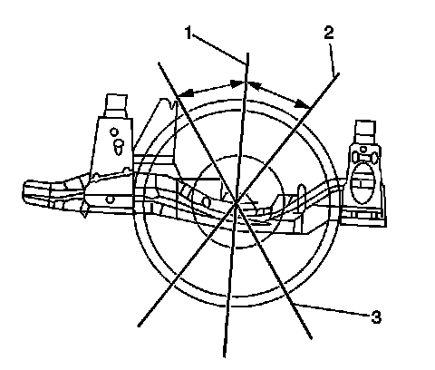
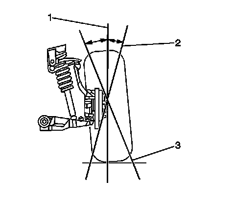
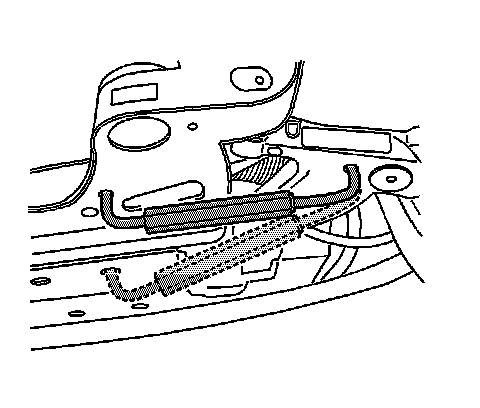

Rear Camber Adjustment
Rear Camber Adjustment
Tools Required
J 45845 Caster and Camber Adjusting Tool
The caster and camber adjustments are made by loosening the lower control arm adjustment bolts and repositioning the lower control arm.
Important: Before adjusting the caster and camber angles, jounce the front bumper 3 times to allow the vehicle to return to normal height.
Measure and adjust the caster and the camber with the vehicle at curb height. The front suspension Z dimension and the rear suspension D dimension are indicated in Trim Heights. Refer to Trim Height Inspection (Trim Height Inspection) .
1. For an accurate reading, do not push or pull on the tires during the alignment process.

2. Determine the caster angle (2, 3).

3. Determine the camber angle (2, 3).

4. Install the J 45845 to the lower control arm and the frame.
5. Loosen the lower control arm adjustment nuts.
Notice: Refer to Fastener Notice (Fastener Notice) .
6. Adjust the caster and the camber angle by repositioning the lower control arm until the specifications have been met.
When the adjustments are complete, hold the lower control arm in position so that the specifications do not change while tightening the lower control arm adjustment bolts.
Tighten the lower control arm adjustment bolts to 135 N.m (96 lb ft).
7. Verify that the caster and the camber are still within specifications. Refer to Wheel Alignment Specifications (Specifications) .
When the caster and camber are within specifications, adjust the toe. Refer to Front Toe Adjustment (Service and Repair) .